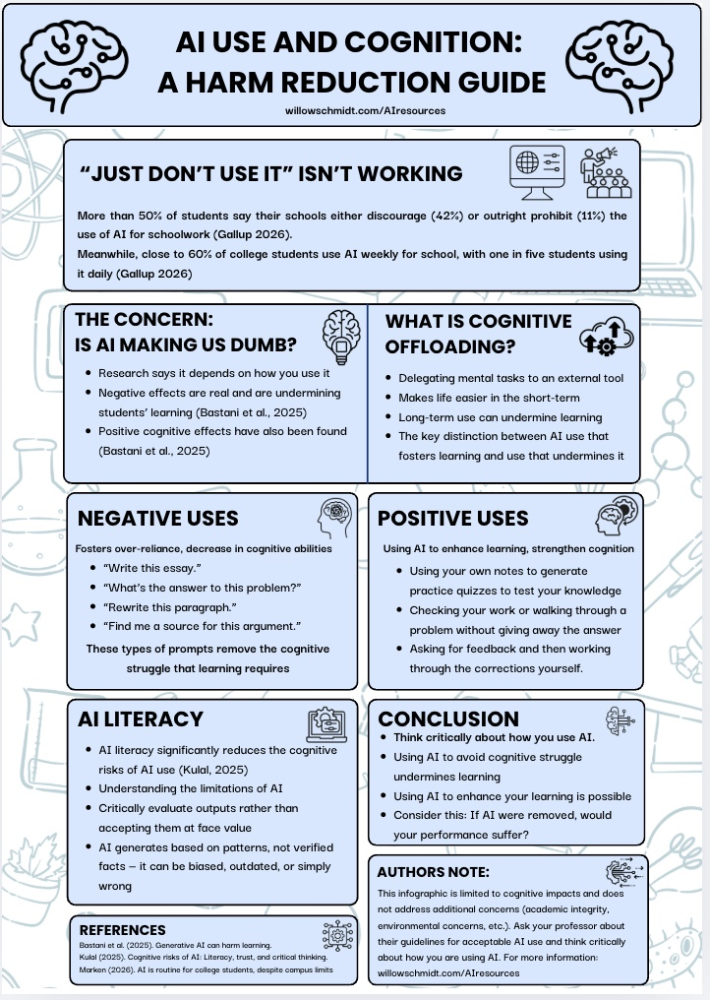
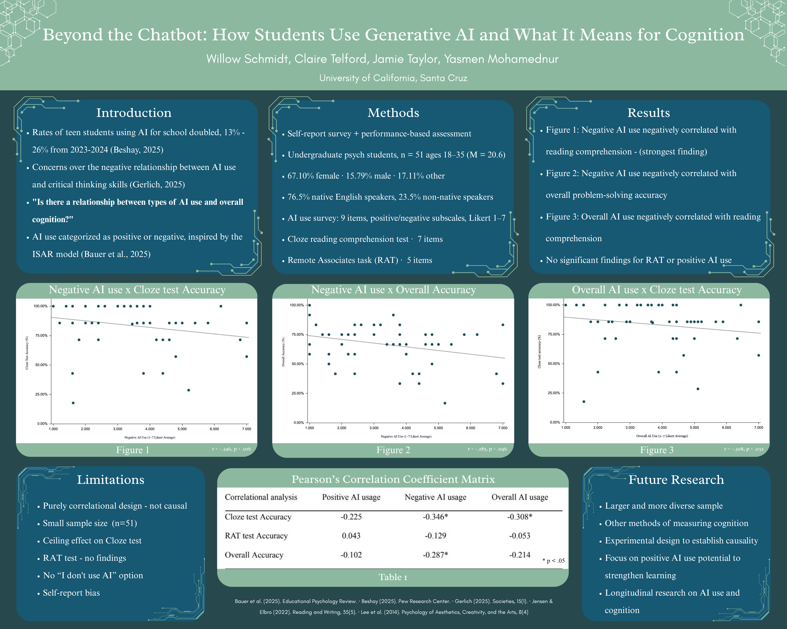

A collection of research, guides, and resources on artificial intelligence and cognition — including my own work and the sources that informed it.
Featured infographic

Information on how to effectively use AI as a student without harming cognitive abilities.
View infographic →Research
AI use in academic settings has become an increasingly contested topic, with concerns highlighting how students engage with the technology and the potential long-term effects on learning. This study examined patterns of AI use among college students and their relationship to performance on a Cloze reading comprehension test, as well as a Remote Associates Task. Significant negative correlations were found between negative AI use and Cloze test accuracy, negative AI use and overall accuracy, as well as overall AI use and Cloze test accuracy.

Supplementary research & resources
AI use & cognition
AI in academic settings